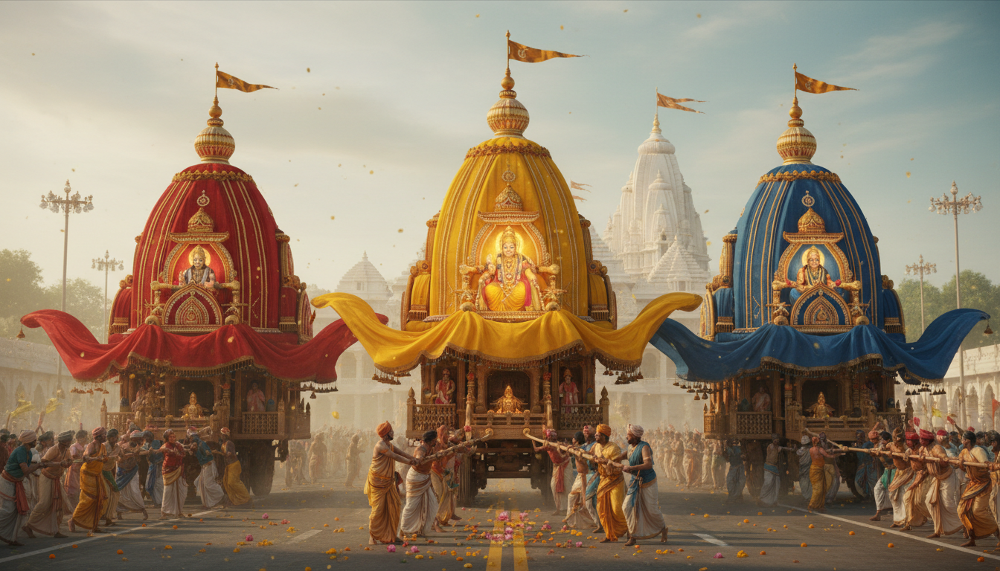

1. Introduction: The 2026 Spiritual Crucible
The mid-2026 period, specifically from June 23 to July 28, constitutes an extraordinary "cosmic crucible" for personal and collective transformation. This window marks a profound transition from the externalized, social activity of Rajas to the deep, restorative contemplation of Sattva. As the deities of the Jagannath Temple move through their annual cycle of public celebration and private healing, they offer a blueprint for a "Systemic Biological Reset." By aligning with these dates, the modern seeker transitions from external turbulence to deep spiritual realignment.

Quick Look: Significant Dates for 2026
* Snana Yatra: June 29, 2026 (The Purification Peak)
* Rath Yatra: July 16, 2026 (The Movement of the Soul)
2. The Great Purification: Snana Yatra and the Sacred Seclusion
The purification cycle peaks on June 29, 2026, during the Jyeshtha Purnima. This day represents a moment of "Somatic Catharsis" where the deities undergo an intensive cleansing to prepare for their public mission.
The Ritual Known as Snana Purnima, the deities are bathed with exactly 108 pots of sacred water drawn from the Suna Kua (Golden Well). As a Wellness Strategist, I emphasize the technical precision of this distribution: Lord Jagannath (35 pots), Lord Balabhadra (33 pots), Devi Subhadra (22 pots), and Sudarshana Chakra (18 pots). This water is mixed with cooling herbal formulations, including sandalwood paste and crushed Tulsi, designed to pacify the subtle body.
The Transformation Immediately following the bath, the deities assume the Hati Besha (Elephant Attire). This represents the Lord’s mercy toward devotees of Ganesha and symbolizes the ultimate synthesis of physical strength and spiritual wisdom.
The Seclusion Exposure to the 108 pots causes the deities to enter a state of "divine fever," necessitating a 15-day withdrawal.
##### The Anavasara Phase (June 30 – July 14, 2026)
| Phase Element | Clinical & Spiritual Description |
|---|---|
| Systemic Reset | Deities are considered convalescing patients suffering from a physical fever; this mirrors a biological "unplugging." |
| Public Darshan | Doors to the sanctum are closed; public viewing is prohibited to allow for deep tissue restoration. |
| Somatic Therapy | Use of Phuluri (medicated herbal oil therapy) to restore depleted somatic reserves and nourish the nervous system. |
| *Separation (Vipralambha)* | Devotees experience the "grief of separation," which serves to dissolve the ego and internalize devotion. |
3. Sibling Solidarity: Decoding the Chariots of 2026
On July 16, 2026, the deities emerge for the Rath Yatra. This festival centers on the biological sibling triad—Jagannath, Balabhadra, and Subhadra—highlighting a model for unshakeable support systems.
##### Technical Specifications of the 2026 Chariots
| Chariot Name / Deity | Height / Wheels / Color | Flag / Horses |
|---|---|---|
| Nandighosa (Jagannath) | 45 Feet / 16 Wheels / Red & Yellow | Flag: Garuda; Horses (4 White): Shankha, Balahaka, Suweta, Haridashwa |
| Taladhwaja (Balabhadra) | 44 Feet / 14 Wheels / Red & Blue | Flag: Unnani (Palm); Horses (4 Black): Tribra, Ghora, Dirghasharma, Swornanava |
| Darpadalana (Subhadra) | 43 Feet / 12 Wheels / Red & Black | Flag: Nadambika (Lotus); Horses (4 Red): Rochika, Mochika, Jita, Aparajita |
The Symbolic Meaning In this arrangement, Balabhadra represents Sandhini-Shakti (Structural Stability and the preservation of Dharma), as symbolized by his horses representing the "cosmic preservation of order." Lord Jagannath represents the Atman (Compassion and the Infinite Soul). Between them, Devi Subhadra acts as the integrative force and bridge, modeling family equilibrium and the power of non-aggressive, unifying grace.
4. Relational Friction and the "Rasagola" Reconciliation
While the festival celebrates siblings, it also hosts a complex "Relational Audit" between Lord Jagannath and Goddess Lakshmi.
- The Abandonment: On Hera Panchami (July 20), Lakshmi assumes the archetype of the Manini-nayika (the hurt partner). Indignant at being left behind, she travels to the Gundicha temple and commands her servitors to break a piece of the Nandighosa chariot.
- The Homecoming: On Niladri Bije (July 27), the return is met with friction. Lakshmi’s servitors slam the Singhadwara (Lion Gate) shut, barring Jagannath’s entry into the temple.
- The Peace Offering: To facilitate Manabhanjana (the dissolution of pride), Jagannath offers a Patta Saree and a plate of Rasagolas. This is the only day of the year these sweets are offered to the deities, serving as a therapeutic tool for marital reconciliation and the restoration of harmony.
5. From Grief to Grace: Vedic Wisdom for Modern Healing
The 2026 window offers a clinical framework for processing transitions and loss.
The Eternal Soul Vedic wisdom teaches that suffering arises when we mistake temporary material forms for the eternal identity of the soul.
"The soul is never born, and it never dies. It is eternal, indestructible, and timeless. It is not destroyed when the body is destroyed." — Bhagavad Gita (2.20)
The Framework of Vedic Counselling Our strategic approach to mental health is grounded in the Sanskrit formula from the Caraka Samhita: "Dhī-Dhairya-Ātmādi-Vijñānaṁ Mano-Doṣoṣadhaṁ Param"
This translates into three pillars of healing:
- Dhi: Cognitive refinement and the development of discrimination.
- Dhairya: Cultivating patience and fortitude in the nervous system.
- Atma-Vijnanam: Experiential knowledge of the true, unconditioned Self.
Active Surrender vs. Resignation Clinical recovery requires moving from passive Resignation (Dainya)—a state of helplessness and systemic freeze—to active Surrender (Prapatti). Surrender is an empowered choice to release attachment to specific outcomes and rest in a larger cosmic intelligence.
Somatic Interventions To discharge trauma stored in the body, we recommend three Ayurvedic protocols:
- Shirodhara: Rhythmic pouring of warm oil on the forehead to down-regulate the sympathetic nervous system and pacify aggravated Vata, the root of modern anxiety.
- Marma Therapy: Activation of 117 energy sites to discharge "Mental Ama" (unprocessed emotional waste) from cellular memory.
- Sensory Fasting: A voluntary restriction of outward desires, mirroring the Anavasara seclusion to allow the mind to reset.
6. Navigator’s Logistics: Attending Rath Yatra 2026
Puri will attract millions in 2026; early strategic planning is mandatory.
Technical Schedule (2026):
- June 29: Snana Yatra (Bathing Ritual)
- July 16: Rath Yatra (Chariot Procession)
- July 20: Hera Panchami (Lakshmi's Relational Audit)
- July 24: Bahuda Yatra (The Return Journey)
- July 25: Suna Besha (Adornment in Gold)
- July 26: Adhara Pana (Offering to the Guardian Spirits)
- July 27: Niladri Bije (Reconciliation & Return to Temple)
- July 28: Festival Conclusion
Global Access International pilgrims should fly into Bhubaneswar (BBI). Major US hubs (New York, San Francisco, Chicago, Atlanta) offer routes via Air India, United, or Emirates. From BBI, Puri is a 60km journey by cab or group tempo traveler.
Safety & Etiquette
- Bada Danda: Arrive at the Grand Road in the early morning to avoid the most dangerous crowd surges.
- Safety: Avoid valuables; follow all instructions from local police and volunteers.
7. Conclusion: The Sunset and the Sunrise
The 2026 transition teaches us that separation and "illness" are often the prerequisites for grander reunions. Using the metaphor of the setting sun, we recognize that death and loss are not ends, but natural pauses in a divine cycle. Like the sun, the soul is destined to rise again.
We conclude with the sacred aspiration: "Jagannatha Swami Nayana Patha Gami Bhavatu Me" (O Lord Jagannath, may You always remain the object of my vision and devotion.)
***
8. Key Takeaways for the Reader
Strategic Wellness Insights for 2026
* Precision Purification: Honor the June 29 peak by incorporating 108-count breathwork or cleansing rituals to mirror the deities' bath.
* The Anavasara Protocol: Use the June 30 – July 14 window for sensory fasting and "Relational Auditing" while external public activity is restricted.
Sibling Archetypes: Reflect on the triad of Balabhadra (Sandhini-Shakti), Subhadra (Integrative Bridge), and Jagannath (Atman*) to stabilize your own family system.
Clinical Surrender: Practice Prapatti (Active Surrender) rather than Dainya* (Helplessness) to navigate life transitions with clarity.
Somatic Release: Utilize Shirodhara to pacify Vata and Marma Therapy* to clear "Mental Ama" during this high-energy festival window.
Sources
- Festival Calendar for 2026-2027 Sri Jagannath Seva Samiti, Kidderpore, Kolkata-700023, Phone: (033)24591500
- Snana Yatra 2026: The Sacred Bathing Festival of Lord Jagannath - ISKCON Vrindavan
- Niladri Bije: When Lord Jagannath Pacifies Goddess Lakshmi With Rasagola To Get Entry Inside Puri Srimandir - ETV Bharat
- Wisdom - From Grief to Grace: How Vedic Wisdom ... - JKYog India
- Vedic Counselling – Emotional Healing & Life Guidance — Ayusha Ayurveda and Lymphatic Massage Therapies Newcastle & Bondi
- Niladri Bije :The story behind Rasagola and how Maa Lakshmi is pacified
- Grief and Healing Through the Bhagavad Gita's Wisdom - Radha Krishna Temple of Dallas
- Jagannath Puri Rath Yatra 2026: A Spiritual Journey Of Devotion - Pandit Milind Guruji
- Jagannath Puri Rath Yatra 2026: Dates, Rituals and Spiritual Meaning
- Jagannath Rath Yatra 2026 Date, Schedule, and Travel Guide - Indian Eagle
- Snana Purnima: The Grand Bathing Festival - 56 Bhog Celebration at Shri Jagannath Mandir Thyagraj Nagar, Delhi
- Snana Yatra of Sri Jagannatha, Baladeva and Subhadra - 29 Jun 2026 - ISKCON Bangalore
- July 6 2026 Panchangam English Konark | BhaktiBharat tithi nakshatra good time bad time
- Porbandar Devshayani Ekadashi 6 July 2026 Panchang - ShubhPanchang
- UNIT 15 INDIAN APPROACHES TO COUNSELLING* 15.1 LEARNING OBJECTIVES 15.2 INTRODUCTION - eGyanKosh
- Vedic Counselling for Mental Health | PDF | Meditation | Mindfulness - Scribd
- How Surrender Can Help You Heal - Mind & Spirit Counseling Center
- A Divine Sibling Bond: Celebrating Rakhi with Puri Jagannath, Balbhadra and Subhadra
- Jagannath, Balabhadra & Subhadra The Complete Story of Divine Siblings - Shri Prasadam
- Maa Subhadra | Sri Jagannath Temple
- The Story of Lord Jagannath, Balabhadra, and Subhadra Mythology and Legends Explained
- Niladri Bije, A Ritual Of Heavenly Love And Affection Between Lord Jagannath And Goddess Laxmi - YouTube
- Rasagola: The Ritual Offering at Jagannath Temple - OdishaPlus
- Jagannath - Wikipedia
- Exploring the Therapeutic Potential of Yoga Philosophy: A Perspective on the Need for Yoga-Based Counselling Program (YBCP) in Common Mental Disorders - PMC
- Surrender is First Step in Spiritual Healing from Grief - Open to Hope
- “I Thought Vipralambha-Seva Is The Highest Thing” By Kesava Krsna Dasa - Blog
- Vipralambha-bhava - The feeling of separation from Krishna - Issuu
- Jaiva Dharma - Chapter Thirty Seven - Bhaktivinoda Institute
- On separation and union - Sambhoga and vipralambha - gaudiya discussions
- June Festivals 2026: Celebrations, Dates & Significance - Astroyogi
- विवाह पंचांग 2026: शुभ विवाह मुहूर्त और तिथियाँ | TALKNDHEAL
- Drik Panchang - online Hindu Almanac and Calendar with Planetary Ephemeris based on Vedic Astrology.
- Today's Panchang agra | Hindu Calendar, Pradosh Kaal Time - Sri Mandir
- Kahuna Lomi Release and Renewal Massage - Selph Health Studios
- The 2026 Retrograde and Planetary Forecast to Help You Flow with Cosmic Energy
- Mercury Retrograde 2026: Dates, Meaning, and What to Do | The Old Farmer's Almanac
- When is Mercury in retrograde in 2026? - Britannica
- What Is Mercury Retrograde? (Plus 2026 Dates) - The Good Trade
- The Three Mercury Retrogrades of 2026 - Conscious Calendars
- Saturn Retrograde 2026: Dates, Meaning & Zodiac Sign Guide | Almanac.com
- Indian Practices for Culturally Relevant E-Mental Health Care for Adolescents - Ijisrt.Com
- Devi Divya Shakti - SoulSensei
- Official Website of ISKCON Temple
- July 6 2026 Panchangam English Pittsburgh | BhaktiBharat tithi nakshatra good time bad time
- Jagannath's Niladri Bije and Rasagolla Dibasa - Indica Today
- Rath Yatra 2026 - Dates, Timings, Rituals & History - Mypuritour Holidays
- Jagannath Rath Yatra 2026: Date, Meaning, Story & Significance - Rudraksha Ratna
- Jagannath Rath Yatra 2026: Date, Time, Rituals & Significance
- Guided Meditation: Connect with SPIRIT GUIDES & PAST LOVED ONES for GRIEF. Emotional Release Healing - YouTube
- Heartland Express, Inc. Declares Regular Quarterly Dividend - Yahoo! Finance Canada
- Temple Puja Calendar - Trumba
- Program Calendar & Course Schedule - Sivananda Ashram Yoga Retreat
- Page 153 of 158 - Travel Blog | Travel Inspiration, Tips and News | Travel Diary - Indian Eagle
- 500BPYTT Advanced Breathwork, Pranayama, Meditation & Yoga Teacher Training
- Today's Choghadiya in Brokenarrow Tuesday, 23 June 2026 - GaneshaSpeaks
- July 6 2026 Panchangam English Birgunj | BhaktiBharat tithi nakshatra good time bad time
- July 6 2026 Panchangam English Sunnyvale | BhaktiBharat tithi nakshatra good time bad time
- Three Ways To Understand Vipralambha-Seva - Krishna's Mercy
- About - Namastayz Retreats
- Mangal Shani Kaal Sarp Dosh Remedies - Vedic Solutions - Divine Sansar UAE
- Source 63
- Venus Retrograde 2026: Dates, Meaning & How It Affects Love, Money, and Relationships
- Upcoming planetary retrogrades of 2026: Key dates and astrological implications - Lifestyle Asia Hong Kong
- Wild Rhythm Coaching – Confidence, Mindset, Lifestyle & Clarity and NRI Experts | Book Your Free Initial Call - Bark.com
- Zen Soul Academy - Yog & Meditation Paradise Point, Queensland, Australia